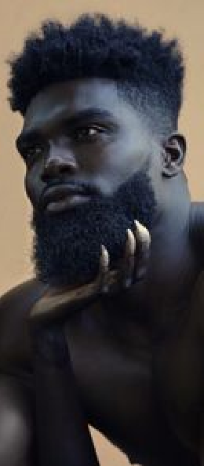
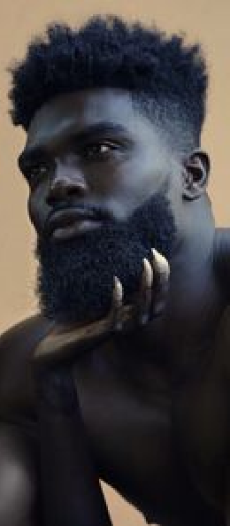

Dicas e Truques
De quem sabe muito sobre cabelos crespos
7 Passos pra se apaixonar pelo seu cabelo crespo natural
Sabemos que a jornada para a aceitação do cabelo crespo natural é longa e nada fácil de trilhar. Afinal, é difícil se libertar das amarras e aprender a se amar depois de anos vivendo em uma sociedade preconceituosa que reprime as características mais comuns do ser humano, como a textura do seu cabelo. Se você está disposta a se aventurar nesse caminho de autoconhecimento e aceitação, vem com a gente! E um segredo: não precisa ter medo!

1. Olhe para o espelho e toque no seu cabelo
Olhando para o espelho, toque no seu cabelo com carinho, veja como é macio, totalmente diferente do que a sociedade fez você acreditar por toda a sua vida. Afinal, não é porque a sua textura é diferente do liso, que ele é duro, feio… Toque nele sem julgamentos e você vai sentir. Vai perceber que essa textura inclusive é incrível para penteados. Você já viu quanto penteados incríveis dá para fazer com o seu cabelo crespo? E o volume, então!? De invejar… É lindo e cheio de poder. É como coroa que nasceu com você.


 
